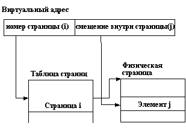
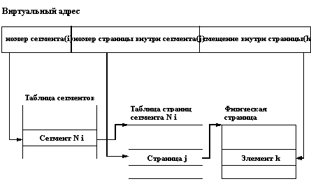
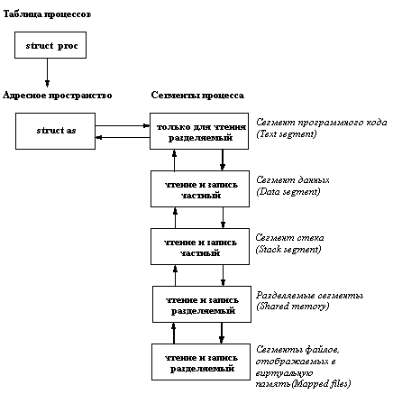

Основная (или как ее принято называть в отечественной литературе и документации, оперативная) память всегда была и остается до сих пор наиболее критическим ресурсом компьютеров. Если учесть, что большинство современных компьютеров обеспечивает 32-разрядную адресацию в пользовательских программах, и все большую силу набирает новое поколение 64-разрядных компьютеров, то становится понятным, что практически безнадежно рассчитывать, что когда-нибудь удастся оснастить компьютеры основной памятью такого объема, чтобы ее хватило для выполнения произвольной пользовательской программы, не говоря уже об обеспечении мультипрограммного режима, когда в основной памяти, вообще говоря, могут одновременно содержаться несколько пользовательских программ.
Поэтому всегда первичной функцией всех операционных систем (более точно, операционных систем, обеспечивающих режим мультипрограммирования) было обеспечение разделения основной памяти между конкурирующими пользовательскими процессами. Мы не будем здесь слишком сильно вдаваться в историю этого вопроса. Заметим лишь, что применявшаяся техника распространяется от статического распределения памяти (каждый процесс пользователя должен полностью поместиться в основной памяти, и система принимает к обслуживанию дополнительные пользовательские процессы до тех пор, пока все они одновременно помещаются в основной памяти), с промежуточным решением в виде "простого своппинга" (система по-прежнему располагает каждый процесс в основной памяти целиком, но иногда на основании некоторого критерия целиком сбрасывает образ некоторого процесса из основной памяти во внешнюю память и заменяет его в основной памяти образом некоторого другого процесса), до смешанных стратегий, основанных на использовании "страничной подкачки по требованию" и развитых механизмов своппинга.
Операционная система UNIX начинала свое существование с применения очень простых методов управления памятью (простой своппинг), но в современных вариантах системы для управления памятью применяется весьма изощренная техника.
Идея виртуальной памяти далеко не нова. Сейчас многие полагают, что в основе этой идеи лежит необходимость обеспечения (при поддержке операционной системы) видимости практически неограниченной (32- или 64-разрядной) адресуемой пользовательской памяти при наличии основной памяти существенно меньших размеров. Конечно, этот аспект очень важен. Но также важно понимать, что виртуальная память поддерживалась и на компьютерах с 16-разрядной адресацией, в которых объем основной памяти зачастую существенно превышал 64 Кбайта.
Вспомните хотя бы 16-разрядный компьютер PDP-11/70, к которому можно было подключить до 2 Мбайт основной памяти. Другим примером может служить выдающаяся отечественная ЭВМ БЭСМ-6, в которой при 15-разрядной адресации 6-байтовых (48-разрядных) машинных слов объем основной памяти был доведен до 256 Кбайт. Операционные системы этих компьютеров тем не менее поддерживали виртуальную память, основным смыслом которой являлось обеспечение защиты пользовательских программ одной от другой и предоставление операционной системе возможности динамически гибко перераспределять основную память между одновременно поддерживаемыми пользовательскими процессами.
Хотя известны и чисто программные реализации виртуальной памяти, это направление получило наиболее широкое развитие после получения соответствующей аппаратной поддержки. Идея аппаратной части механизма виртуальной памяти состоит в том, что адрес памяти, вырабатываемый командой, интерпретируется аппаратурой не как реальный адрес некоторого элемента основной памяти, а как некоторая структура, разные поля которой обрабатываются разным образом.
В наиболее простом и наиболее часто используемом случае страничной виртуальной памяти каждая виртуальная память (виртуальная память каждого процесса) и физическая основная память представляются состоящими из наборов блоков или страниц одинакового размера. Для удобства реализации размер страницы всегда выбирается равным числу, являющемуся степенью 2. Тогда, если общая длина виртуального адреса есть N (в последние годы это тоже всегда некоторая степень 2 - 16, 32, 64), а размер страницы есть 2M), то виртуальный адрес рассматривается как структура, состоящая из двух полей: первое поле занимает (N-M+1) разрядов адреса и задает номер страницы виртуальной памяти, второе поле занимает (M-1) разрядов и задает смещение внутри страницы до адресуемого элемента памяти (в большинстве случаев - байта). Аппаратная интерпретация виртуального адреса показана на рисунке 3.1.
Рисунок иллюстрирует механизм на концептуальном уровне, не вдаваясь в детали по поводу того, что из себя представляет и где хранится таблица страниц. Мы не будем рассматривать возможные варианты, а лишь заметим, что в большинстве современных компьютеров со страничной организацией виртуальной памяти все таблицы страниц хранятся в основной памяти, а быстрота доступа к элементам таблицы текущей виртуальной памяти достигается за счет наличия сверхбыстродействующей буферной памяти (кэша).
Для полноты изложения, но не вдаваясь в детали, заметим, что существуют две другие схемы организации виртуальной памяти: сегментная и сегментно-страничная. При сегментной организации виртуальный адрес по-прежнему состоит из двух полей - номера сегмента и смещения внутри сегмента. Отличие от страничной организации состоит в том, что сегменты виртуальной памяти могут быть разного размера. В элементе таблицы сегментов помимо физического адреса начала сегмента (если виртуальный сегмент содержится в основной памяти) содержится длина сегмента. Если размер смещения в виртуальном адресе выходит за пределы размера сегмента, возникает прерывание. Понятно, что компьютер с сегментной организацией виртуальной памяти можно использовать как компьютер со страничной организацией, если использовать сегменты одного размера.

Рис. 3.1. Схема страничной организации виртуальной памяти
При сегментно-страничной организации виртуальной памяти происходит двухуровневая трансляция виртуального адреса в физический. В этом случае виртуальный адрес состоит из трех полей: номера сегмента виртуальной памяти, номера страницы внутри сегмента и смещения внутри страницы. Соответственно, используются две таблицы отображения - таблица сегментов, связывающая номер сегмента с таблицей страниц, и отдельная таблица страниц для каждого сегмента (рисунок 3.2).

Рис. 3.2. Схема сегментно-страничной организации виртуальной памяти
Сегментно-страничная организация виртуальной памяти позволяла совместно использовать одни и те же сегменты данных и программного кода в виртуальной памяти разных задач (для каждой виртуальной памяти существовала отдельная таблица сегментов, но для совместно используемых сегментов поддерживались общие таблицы страниц).
В дальнейшем рассмотрении мы ограничимся проблемами управления страничной виртуальной памяти. С небольшими коррективами все обсуждаемые ниже методы и алгоритмы относятся и к сегментной, и сегментно-страничной организациям.
Как же достигается возможность наличия виртуальной памяти с размером, существенно превышающим размер оперативной памяти? В элементе таблицы страниц может быть установлен специальный флаг (означающий отсутствие страницы), наличие которого заставляет аппаратуру вместо нормального отображения виртуального адреса в физический прервать выполнение команды и передать управление соответствующему компоненту операционной системы. Английский термин "demand paging" (листание по требованию) достаточно точно характеризует функции, выполняемые этим компонентом. Когда программа обращается к виртуальной странице, отсутствующей в основной памяти, т.е. "требует" доступа к данным или программному коду, операционная система удовлетворяет это требование путем выделения страницы основной памяти, перемещения в нее копии страницы, находящейся во внешней памяти, и соответствующей модификации элемента таблицы страниц. После этого происходит "возврат из прерывания", и команда, по "требованию" которой выполнялись эти действия, продолжает свое выполнение.
Наиболее ответственным действием описанного процесса является выделение страницы основной памяти для удовлетворения требования доступа к отсутствующей в основной памяти виртуальной странице. Напомним, что мы рассматриваем ситуацию, когда размер каждой виртуальной памяти может существенно превосходить размер основной памяти. Это означает, что при выделении страницы основной памяти с большой вероятностью не удастся найти свободную (не приписанную к какой-либо виртуальной памяти) страницу. В этом случае операционная система должна в соответствии с заложенными в нее критериями (совокупность этих критериев принято называть "политикой замещения", а основанный на них алгоритм замещения - "алгоритмом подкачки") найти некоторую занятую страницу основной памяти, переместить в случае надобности ее содержимое во внешнюю память, должным образом модифицировать соответствующий элемент соответствующей таблицы страниц и после этого продолжить процесс удовлетворения доступа к странице.
Существует большое количество разнообразных алгоритмов подкачки. Объем этого курса не позволяет рассмотреть их подробно. Соответствующий материал можно найти в изданных на русском языке книгах по операционным системам Цикритзиса и Бернстайна, Дейтела и Краковяка. Однако, чтобы вернуться к описанию конкретных методов управления виртуальной памятью, применяемых в ОС UNIX, мы все же приведем некоторую краткую классификацию алгоритмов подкачки.
Во-первых, алгоритмы подкачки делятся на глобальные и локальные. При использовании глобальных алгоритмов операционная система при потребности замещения ищет страницу основной памяти среди всех страниц, независимо от их принадлежности к какой-либо виртуальной памяти. Локальные алгоритмы предполагают, что если возникает требование доступа к отсутствующей в основной памяти странице виртуальной памяти ВП1, то страница для замещения будет искаться только среди страниц основной памяти, приписанных к той же виртуальной памяти ВП1.
Наиболее распространенными традиционными алгоритмами (как в глобальном, так в локальном вариантах) являются алгоритмы FIFO (First In First Out) и LRU (Least Recently Used). При использовании алгоритма FIFO для замещения выбирается страница, которая дольше всего остается приписанной к виртуальной памяти. Алгоритм LRU предполагает, что замещать следует ту страницу, к которой дольше всего не происходили обращения. Хотя интуитивно кажется, что критерий алгоритма LRU является более правильным, известны ситуации, в которых алгоритм FIFO работает лучше (и, кроме того, он гораздо более дешево реализуется).
Заметим еще, что при использовании глобальных алгоритмов, вне зависимости от конкретного применяемого алгоритма, возможны и теоретически неизбежны критические ситуации, которые называются по-английски thrashing (несмотря на множество попыток, хорошего русского эквивалента так и не удалось придумать). Рассмотрим простой пример. Пусть на компьютере в мультипрограммном режиме выполняются два процесса - П1 в виртуальной памяти ВП1 и П2 в виртуальной памяти ВП2, причем суммарный размер ВП1 и ВП2 больше размеров основной памяти. Предположим, что в момент времени t1 в процессе П1 возникает требование виртуальной страницы ВС1. Операционная система обрабатывает соответствующее прерывание и выбирает для замещения страницу основной памяти С2, приписанную к виртуальной странице ВС2 виртуальной памяти ВП2 (т.е. в элементе таблицы страниц, соответствующем ВС2, проставляется флаг отсутствия страницы). Для полной обработки требования доступа к ВС1 в общем случае потребуется два обмена с внешней памятью (первый, чтобы записать текущее содержимое С2, второй - чтобы прочитать копию ВС1). Поскольку операционная система поддерживает мультипрограммный режим работы, то во время выполнения обменов доступ к процессору получит процесс П2, и он, вполне вероятно, может потребовать доступа к своей виртуальной странице ВС2 (которую у него только что отняли). Опять будет обрабатываться прерывание, и ОС может заменить некоторую страницу основной памяти С3, которая приписана к виртуальной странице ВС3 в ВП1. Когда закончатся обмены, связанные с обработкой требования доступа к ВС1, возобновится процесс П1, и он, вполне вероятно, потребует доступа к своей виртуальной странице ВС3 (которую у него только что отобрали). И так далее. Общий эффект состоит в том, что непрерывно работает операционная система, выполняя бесчисленные и бессмысленные обмены с внешней памятью, а пользовательские процессы П1 и П2 практически не продвигаются.
Понятно, что при использовании локальных алгоритмов ситуация thrashing, затрагивающая несколько процессов, невозможна. Однако в принципе возможна аналогичная ситуация внутри одной виртуальной памяти: ОС может каждый раз замещать ту страницу, к которой процесс обратится в следующий момент времени.
Единственным алгоритмом, теоретически гарантирующим отсутствие thrashing, является так называемый "оптимальный алгоритм Биледи" (по имени придумавшего его венгерского математика). Алгоритм заключается в том, что для замещения следует выбирать страницу, к которой в будущем наиболее долго не будет обращений. Понятно, что в динамической среде операционной системы точное знание будущего невозможно, и в этом контексте алгоритм Биледи представляет только теоретический интерес (хотя он с успехом применяется практически, например, в компиляторах для планирования использования регистров).
В 1968 году американский исследователь Питер Деннинг сформулировал принцип локальности ссылок (называемый принципом Деннинга) и выдвинул идею алгоритма подкачки, основанного на понятии рабочего набора. В некотором смысле предложенный им подход является практически реализуемой аппроксимацией оптимального алгоритма Биледи. Принцип локальности ссылок (недоказуемый, но подтверждаемый на практике) состоит в том, что если в период времени (T-t, T) программа обращалась к страницам (С1, С2, ..., Сn), то при надлежащем выборе t с большой вероятностью эта программа будет обращаться к тем же страницам в период времени (T, T+t). Другими словами, принцип локальности утверждает, что если не слишком далеко заглядывать в будущее, то можно хорошо его прогнозировать исходя из прошлого. Набор страниц (С1, С2, ..., Сn) называется рабочим набором программы (или, правильнее, соответствующего процесса) в момент времени T. Понятно, что с течением времени рабочий набор процесса может изменяться (как по составу страниц, так и по их числу). Идея алгоритма подкачки Деннинга (иногда называемого алгоритмом рабочих наборов) состоит в том, что операционная система в каждый момент времени должна обеспечивать наличие в основной памяти текущих рабочих наборов всех процессов, которым разрешена конкуренция за доступ к процессору. Мы не будем вдаваться в технические детали алгоритма, а лишь заметим следующее. Во-первых, полная реализация алгоритма Деннинга практически гарантирует отсутствие thrashing. Во-вторых, алгоритм реализуем (известна, по меньшей мере, одна его полная реализация, которая однако потребовала специальной аппаратной поддержки). В-третьих, полная реализация алгоритма Деннинга вызывает очень большие накладные расходы.
Поэтому на практике применяются облегченные варианты алгоритмов подкачки, основанных на идее рабочего набора. Один из таких вариантов применяется и в ОС UNIX (насколько нам известно, во всех версиях системы, относящихся к ветви System V). Мы кратко опишем этот вариант в п. 3.1.3.
Материал, приведенный в данном разделе, хотя и не отражает в полном объеме все проблемы и решения, связанные с управлением виртуальной памятью, достаточен для того, чтобы осознать важность и сложность соответствующих компонентов операционной системы. В любой операционной системе управление виртуальной памятью занимает центральное место. Когда-то Игорь Силин (основной разработчик известной операционной системы Дубна для БЭСМ-6) выдвинул тезис, известный в народе как "Тезис Силина": "Расходы, затраченные на управление виртуальной памятью, окупаются". Я думаю, что любой специалист в области операционных систем согласится с истинностью этого тезиса.
Понятно, что и разработчики ОС UNIX уделяли большое внимание поискам простых и эффективных механизмов управления виртуальной памятью (в области операционных систем абсолютно истинным является утверждение, что любое хорошее решение обязано быть простым). Но основной проблемой было то, что UNIX должен был быть мобильной операционной системой, легко переносимой на разные аппаратные платформы. Хотя на концептуальном уровне все аппаратные механизмы поддержки виртуальной памяти практически эквивалентны, реальные реализации часто весьма различаются. Невозможно создать полностью машинно-независимый компонент управления виртуальной памятью. С другой стороны, имеются существенные части программного обеспечения, связанного с управлением виртуальной памятью, для которых детали аппаратной реализации совершенно не важны. Одним из достижений ОС UNIX является грамотное и эффективное разделение средств управления виртуальной памятью на аппаратно-независимую и аппаратно-зависимую части. Коротко рассмотрим, что и каким образом удалось включить в аппаратно-независимую часть подсистемы управления виртуальной памятью ОС UNIX (ниже мы умышленно опускаем технические детали и упрощаем некоторые аспекты).
Основная идея состоит в том, что ОС UNIX опирается на некоторое собственное представление организации виртуальной памяти, которое используется в аппаратно-независимой части подсистемы управления виртуальной памятью и связывается с конкретной аппаратной реализацией с помощью аппаратно-зависимой части. В чем же состоит это абстрактное представление виртуальной памяти?
Во-первых, виртуальная память каждого процесса представляется в виде набора сегментов (рисунок 3.3).

Рис. 3.3. Сегментная структура виртуального адресного пространства
Как видно из рисунка, виртуальная память процесса ОС UNIX разбивается на сегменты пяти разных типов. Три типа сегментов обязательны для каждой виртуальной памяти, и сегменты этих типов присутствуют в виртуальной памяти в одном экземпляре для каждого типа. Сегмент программного кода содержит только команды. Реально в него помещается соответствующий сегмент выполняемого файла, который указывался в качестве параметра системного вызова exec для данного процесса. Сегмент программного кода не может модифицироваться в ходе выполнения процесса и потому возможно использование одного экземпляра кода для разных процессов.
Сегмент данных содержит инициализированные и неинициализированные статические переменные программы, выполняемой в данном процессе (на этом уровне изложения под статическими переменными лучше понимать области виртуальной памяти, адреса которых фиксируются в программе при ее загрузке и действуют на протяжении всего ее выполнения). Понятно, что поскольку речь идет о переменных, содержимое сегмента данных может изменяться в ходе выполнения процесса, следовательно, к сегменту должен обеспечиваться доступ и по чтению, и по записи. С другой стороны, поскольку мы говорим о собственных переменных данной программы, нельзя разрешить нескольким процессам совместно использовать один и тот же сегмент данных (по причине несогласованного изменения одних и тех же переменных разными процессами ни один из них не мог бы успешно завершиться).
Сегмент стека - это область виртуальной памяти, в которой размещаются автоматические переменные программы, явно или неявно в ней присутствующие. Этот сегмент, очевидно, должен быть динамическим (т.е. доступным и по чтению, и по записи), и он, также очевидно, должен быть частным (приватным) сегментом процесса.
Разделяемый сегмент виртуальной памяти образуется при подключении к ней сегмента разделяемой памяти (см. п. 3.4.1). По определению, такие сегменты предназначены для координированного совместного использования несколькими процессами. Поэтому разделяемый сегмент должен допускать доступ по чтению и по записи и может разделяться несколькими процессами.
Сегменты файлов, отображаемых в виртуальную память (см. п. 2.4.5), представляют собой разновидность разделяемых сегментов. Разница состоит в том, что если при необходимости освободить оперативную память страницы разделяемых сегментов копируются ("откачиваются") в специальную системную область подкачки (swapping space) на диске, то страницы сегментов файлов, отображаемых в виртуальную память, в случае необходимости откачиваются прямо на свое место в области внешней памяти, занимаемой файлом. Такие сегменты также допускают доступ и по чтению, и по записи и являются потенциально совместно используемыми.
На аппаратно-независимом уровне сегментная организация виртуальной памяти каждого процесса описывается структурой as, которая содержит указатель на список описателей сегментов, общий текущий размер виртуальной памяти (т.е. суммарный размер всех существующих сегментов), текущий размер физической памяти, которую процесс занимает в данный момент времени, и наконец, указатель на некоторую аппаратно-зависимую структуру, данные которой используются при отображении виртуальных адресов в физические. Описатель каждого сегмента (несколько огрубляя) содержит индивидуальные характеристики сегмента, в том числе, виртуальный адрес начала сегмента (каждый сегмент занимает некоторую непрерывную область виртуальной памяти), размер сегмента в байтах, список операций, которые можно выполнять над данным сегментом, статус сегмента (например, в каком режиме к нему возможен доступ, допускается ли совместное использование и т.д.), указатель на таблицу описателей страниц сегмента и т.д. Кроме того, описатель каждого сегмента содержит прямые и обратные ссылки по списку описателей сегментов данной виртуальной памяти и ссылку на общий описатель виртуальной памяти as.
На уровне страниц поддерживается два вида описательных структур. Для каждой страницы физической оперативной памяти существует описатель, входящий в один из трех списков. Первый список включает описатели страниц, не допускающих модификации или отображаемых в область внешней памяти какого-либо файла (например, страницы сегментов программного кода или страницы сегмента файла, отображаемого в виртуальную память). Для таких страниц не требуется пространство в области подкачки системы; они либо вовсе не требуют откачки (перемещения копии во внешнюю память), либо откачка производится в другое место. Второй список - это список описателей свободных страниц, т.е. таких страниц, которые не подключены ни к одной виртуальной памяти. Такие страницы свободны для использования и могут быть подключены к любой виртуальной памяти. Наконец, третий список страниц включает описатели так называемых анонимных страниц, т.е. таких страниц, которые могут изменяться, но для которых нет "родного" места во внешней памяти.
В любом описателе физической страницы сохраняются копии признаков обращения и модификации страницы, вырабатываемых конкретной используемой аппаратурой.
Для каждого сегмента поддерживается таблица отображения, связывающая адреса входящих в него виртуальных страниц с описателями соответствующих им физических страниц из первого или третьего списков описателей физических страниц для виртуальных страниц, присутствующих в основной памяти, или с адресами копий страниц во внешней памяти для виртуальных страниц, отсутствующих в основной памяти. (Правильнее сказать, что поддерживается отдельная таблица отображения для каждого частного сегмента и одна общая таблица отображения для каждого разделяемого сегмента.)
Введение подобной обобщенной модели организации виртуальной памяти и тщательное продумывание связи аппаратно-независимой и аппаратно-зависимой частей подсистемы управления виртуальной памятью позволило добиться того, что обращения к памяти, не требующие вмешательства операционной системы, производятся, как и полагается, напрямую с использованием конкретных аппаратных средств. Вместе с тем, все наиболее ответственные действия операционной системы, связанные с управлением виртуальной памятью, выполняются в аппаратно-независимой части с необходимыми взаимодействиями с аппаратно-зависимой частью.
Конечно, в результате сложность переноса той части ОС UNIX, которая относится к управлению виртуальной памятью, определяется сложностью написания аппаратно-зависимой части. Чем ближе архитектура аппаратуры, поддерживающей виртуальную память, к абстрактной модели виртуальной памяти ОС UNIX, тем проще перенос. Для справедливости заметим, что в подавляющем большинстве современных компьютеров аппаратура выполняет функции, существенно превышающие потребности модели UNIX, так что создание новой аппаратно-зависимой части подсистемы управления виртуальной памятью ОС UNIX в большинстве случаев не является чрезмерно сложной задачей.
Как мы упоминали в конце п. 3.1.1, в ОС UNIX используется некоторый облегченный вариант алгоритма подкачки, основанный на использовании понятия рабочего набора. Основная идея заключается в оценке рабочего набора процесса на основе использования аппаратно (а в некоторых реализациях - программно) устанавливаемых признаков обращения к страницам основной памяти. (Заметим, что в этом подразделе при описании алгоритма мы не различаем функции аппаратно-независимого и аппаратно-зависимого компонентов подсистемы управления виртуальной памятью.)
Периодически для каждого процесса производятся следующие действия. Просматриваются таблицы отображения всех сегментов виртуальной памяти этого процесса. Если элемент таблицы отображения содержит ссылку на описатель физической страницы, то анализируется признак обращения. Если признак установлен, то страница считается входящей в рабочий набор данного процесса, и сбрасывается в нуль счетчик старения данной страницы. Если признак не установлен, то к счетчику старения добавляется единица, а страница приобретает статус кандидата на выход из рабочего набора процесса. Если при этом значение счетчика достигает некоторого (различающегося в разных реализациях) критического значения, страница считается вышедшей из рабочего набора процесса, и ее описатель заносится в список страниц, которые можно откачать (если это требуется) во внешнюю память. По ходу просмотра элементов таблиц отображения в каждом из них признак обращения гасится.
Откачку страниц, не входящих в рабочие наборы процессов, производит специальный системный процесс-stealer. Он начинает работать, когда количество страниц в списке свободных страниц достигает установленного нижнего порога. Функцией этого процесса является анализ необходимости откачки страницы (на основе признака изменения) и запись копии страницы (если это требуется) в соответствующую область внешней памяти (т.е. либо в системную область подкачки - swapping space для анонимных страниц, либо в некоторый блок файловой системы для страницы, входящей в сегмент отображаемого файла).
Очевидно, рабочий набор любого процесса может изменяться во время его выполнения. Другими словами, возможна ситуация, когда процесс обращается к виртуальной странице, отсутствующей в основной памяти. В этом случае, как обычно, возникает аппаратное прерывание, в результате которого начинает работать операционная система. Дальнейший ход событий зависит от обстоятельств. Если список описателей свободных страниц не пуст, то из него выбирается некоторый описатель, и соответствующая страница подключается к виртуальной памяти процесса (конечно, после считывания из внешней памяти содержимого копии этой страницы, если это требуется).
Но если возникает требование страницы в условиях, когда список описателей свободных страниц пуст, то начинает работать механизм своппинга. Основной повод для применения другого механизма состоит в том, что простое отнятие страницы у любого процесса (включая тот, который затребовал бы страницу) потенциально вело бы к ситуации thrashing, поскольку разрушало бы рабочий набор некоторого процесса). Любой процесс, затребовавший страницу не из своего текущего рабочего набора, становится кандидатом на своппинг. Ему больше не предоставляются ресурсы процессора, и описатель процесса ставится в очередь к системному процессу-swapper. Конечно, в этой очереди может находиться несколько процессов. Процесс-swapper по очереди осуществляет полный своппинг этих процессов (т.е. откачку всех страниц их виртуальной памяти, которые присутствуют в основной памяти), помещая соответствующие описатели физических страниц в список свободных страниц, до тех пор, пока количество страниц в этом списке не достигнет установленного в системе верхнего предела. После завершения полного своппинга каждого процесса одному из процессов из очереди к процессу-swapper дается возможность попытаться продолжить свое выполнение (в расчете на то, что свободной памяти уже может быть достаточно).
Заметим, что мы описали наиболее сложный алгоритм, когда бы то ни было использовавшийся в ОС UNIX. В последней "фактически стандартной" версии ОС UNIX (System V Release 4) используется более упрощенный алгоритм. Это глобальный алгоритм, в котором вероятность thrashing погашается за счет своппинга. Используемый алгоритм называется NRU (Not Recently Used) или clock. Смысл алгоритма состоит в том, что процесс-stealer периодически очищает признаки обращения всех страниц основной памяти, входящих в виртуальную память процессов (отсюда название "clock"). Если возникает потребность в откачке (т.е. достигнут нижний предел размера списка описателей свободных страниц), то stealer выбирает в качестве кандидатов на откачку прежде всего те страницы, к которым не было обращений по записи после последней "очистки" и у которых нет признака модификации (т.е. те, которые можно дешевле освободить). Во вторую очередь выбираются страницы, которые действительно нужно откачивать. Параллельно с этим работает описанный выше алгоритм своппинга, т.е. если возникает требование страницы, а свободных страниц нет, то соответствующий процесс становится кандидатом на своппинг.
В заключение затронем еще одну важную тему, непосредственно связанную с управлением виртуальной памятью - копирование страниц при попытке записи (copy on write). Как мы отмечали в п. 2.1.7, при выполнении системного вызова fork() ОС UNIX образует процесс-потомок, являющийся полной копией своего предка. Тем не менее, у потомка своя собственная виртуальная память, и те сегменты, которые должны быть его частными сегментами, в принципе должны были бы полностью скопироваться. Однако, несмотря на то, что частные сегменты допускают доступ и по чтению, и по записи, ОС не знает, будет ли предок или потомок реально производить запись в каждую страницу таких сегментов. Поэтому было бы неразумно производить полное копирование частных сегментов во время выполнения системного вызова fork().
Поэтому в таких случаях используется техника копирования страниц при попытке записи. Несмотря на то, что в сегмент запись разрешена, для каждой его страницы устанавливается блокировка записи. Тем самым, во время попытки выполнения записи возникает прерывание, и ОС на основе анализа статуса соответствующего сегмента принимает решение о выделении новой страницы, копировании на нее содержимого оригинальной страницы и о включении этой новой страницы на место старой в виртуальную память либо процесса-предка, либо процесса-потомка (в зависимости от того, кто из них пытался писать).
На этом мы заканчиваем краткое описание механизма управления виртуальной памятью в ОС UNIX. Еще раз подчеркнем, что мы опустили множество важных технических деталей, стремясь продемонстрировать наиболее важные принципиальные решения.
Предыдущая глава | Оглавление | Следующая глава
Comments: [email protected]
Copyright © CIT